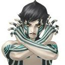
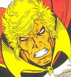

Forums galactiques > Taverne galactique : lieu de discussion informel > Concours d'avatars : le vote !
Hercule | 1 | |
Lord Oblivion | 3 | |
Blutch | 9 | |
lttiger | 1 | |
thegrumo | 1 | |
lord legrumo | 2 | |
Dark Vador | 1 | |
Spectror | 3 | |
Aëschma | 5 | |
lord bloody | 3 | |
pinocytose | 0 | |
Kanar | 0 | |
xeos | 0 | |
Chaaka | 1 | |
Maedhros | 1 | |
Bul-Kathos | 1 | |
tsumi | 1 | |
Mighty Goat | 0 | |
Bouh214 | 6 | |
Baccarax | 1 | |
cyrkan | 0 | |
Folken Fanel | 4 | |
Anngünn | 1 | |
Mushu | 0 | |
Monseigneur gorman | 1 | |
Feänor | 0 | |
Furion | 2 | |
Total : 48 vote(s) | ||
Lord Oblivion 27/03 ETU 21:02 | +1 pour humour décapant a trois messages! :-) |
Blutch 28/03 ETU 00:23 | *Comme le veut la coutume, venant de recevoir son prix, le Caporal Blutch improvisa un discours* *Se tournant vers Hercule* Oui promis, je ne ferais pas de politique dans ce discours *Puis réajustant son col et en se dirigeant vers la cinquantaine de commandants présents* Je tiens tout d'abord à remercier tous les candidats de ce concours, ainsi que l'ensemble du jury. Je remercie également tout particulièrement Hercule, donateur et organisateur de ce concours, pour sa prise d'initiative, sa générosité et sa volonté d'animer la taverne par ce concours original. Bien sur je ne remercie pas tous les commandants qui ont exprimé leur fidélité pour mon avis de recherche. Et oui j'en suis fort surpris, je m'attendais à voir Bouh214 décrocher haut la main la première place mais non, il n'est que deuxième. Pourtant il s'était fait beau avec le chapeau que je lui ai fait faire. Du coup j'ai un mal fou à consoler mon couturier qui vient de perdre toute confiance en lui. Vous comprenez depuis le temps que je lui disais que c'était lui le meilleur. Eh non, son beau chapeau a été détrôné par une vulgaire affiche. Bon, rassurez-vous, je m'occupe bien de mon couturier et je viens de lui passer une nouvelle commande de chaussettes extra larges pour 25 millions de Leems entre 2 commandes de cagoules noires (Celles qui accompagnent les pancartes). Et oui, maintenant que le combat contre le ghozer est fini, je claque vraiment mes Leems dans n'importe quoi. Allez je vous laisse, je dois me rendre à une réunion de poker, le genre de réunion où on fait mumuse avec le gros bouton r... euh disons donc... ... bref je souhaite bon courage à Spectror, s'il veut tenir ses promesses, il n'a que 357 commandants qui n'ont pas voté pour lui à exterminer. Allez occupe toi déjà des 45 qui ont voté contre toi. |
bruce willis 29/03 ETU 19:21 | OUAI PA TERRIBLE |
pinocytose 29/03 ETU 19:25 | J'ai pas compris, pourquoi tu dis ca Bruce? |
bruce willis30/03 ETU 12:12 | voter pour le boss |
bruce willis30/03 ETU 12:12 | non c vrai il est pa mal bien sur je sui le boss |
pinocytose30/03 ETU 12:18 | Il est finit le concour Bruce le gagnant c'est Blutch |
bruce willis30/03 ETU 12:39 | impossible juste paseqil a mi un lon discour |
pinocytose30/03 ETU 12:49 | Hercule 17/03 ETU 18:36 Tout est dans le titre. Cloture du vote vendredi prochain. ce message a été posté le 17 le vendredi d'après, le 24 si je ne me trompe pas, les votes étaient clos et le resultat connu.On est le 30 donc le concour est terminé depuis près d'une semaine est le gagnant est Blutch le second c'est Bouh214 et le troisieme c'est aëschma. Tente ta chance la prochaine fois je suis sur que quelqu'un en organisera un autre de concour. |
Blutch30/03 ETU 13:21 | *Trip trainant encore au concours d'avatars avec les retardataires se permis de déranger le caporal en pleine réunion stratégique* -Eh Blutch, y'a un petit morveux qui te chambre là. Il doit être jaloux de ta première place. -Laisse moi rire Trip, c'est Spectror que tu appelles morveux ? -Non non, c'est ... attends je regarde ... Bruce Willis. -Wouahou ! Bruce Willis nous fait l'honneur de sa présence, j'ai vu sa présentation l'autre jour. Je ne te permets pas de l'appeler morveux, il parait que c'est un très beau sportif, et intelligent en plus ! -Ouais mais il n’aligne pas 3 mots en français le pauvre. Dit, il va devenir ennemi public number one ! Dit tu vas lui faire sa peau ! D'la baston, d'la baston ! -Oh du calme, j'ai autre chose à faire moi. Disons donc ça me prend du temps l'organisation du tournoi de poker galactique. Pour l'instant je vais juste chercher un dictionnaire à côté pour lui offrir. |
Lord Oblivion30/03 ETU 18:40 | Euh, informez bruce que les dicos sont en vente à côté. Ton avatar est utilisé par tito... Et Pino, pour info, concours s'écrit avec un S |
| Ixion  30/03 ETU 18:47 | Mon cher Bruce, si tu veux critiquer les discours de Blutch, fais-le avec classe...mais je sais que tu en es parfaitement incapable, par conséquent, il ne te reste qu'une chose à faire: te taire! |
pinocytose30/03 ETU 19:10 | Merci cher Lord Oblivion de bien vouloir a travers la galaxie m'aider a ameliorer mon orthographe, je vous en suis reconnaissant. (HRP Bon il restera toujours des fautes mais je le fais pas exprès.Merci Lord je vais essayé de m'ameliorer même si c'est pas gagné ^^ /HRP) |
Lord Oblivion30/03 ETU 19:51 | De m'améliorER. |
bruce willis01/04 ETU 11:29 | T EST LA NICO |
Shura 01/04 ETU 11:30 | ouai,j'ador ton avatar. |
bruce willis01/04 ETU 21:19 | a enfin pa mal le tien aussi mai le mien est mieu pui ceu d autres c vraimen de la kennel |
bruce willis01/04 ETU 21:20 | desoler j nariv pa a soigneeee mon ortografe |
| Adam  01/04 ETU 23:25 | Prend des cours.......... |
Maedhros 01/04 ETU 23:58 | Arf, qui a voté pour moi ? Si jamais je le trouve, il va payer ! Draguer une fille comme moi en gardant l’anonymat. Rha les hommes … Tous des tafiolles. |
Forums galactiques > Taverne galactique : lieu de discussion informel > Concours d'avatars : le vote !